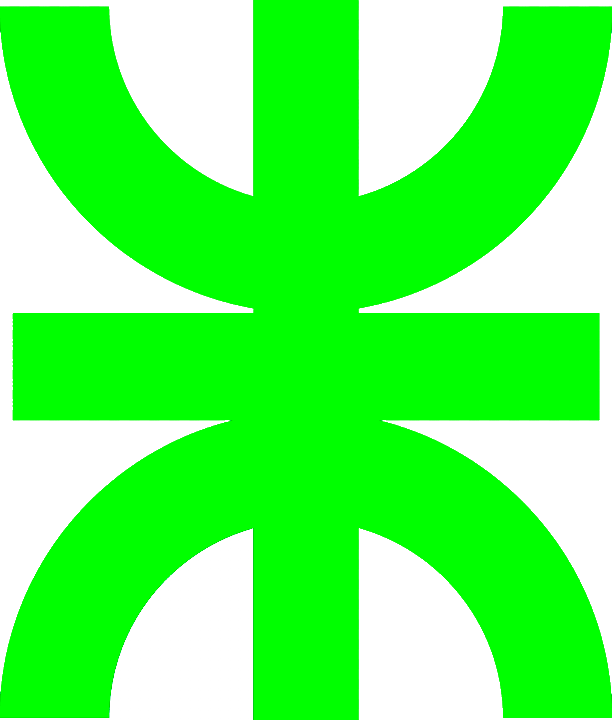
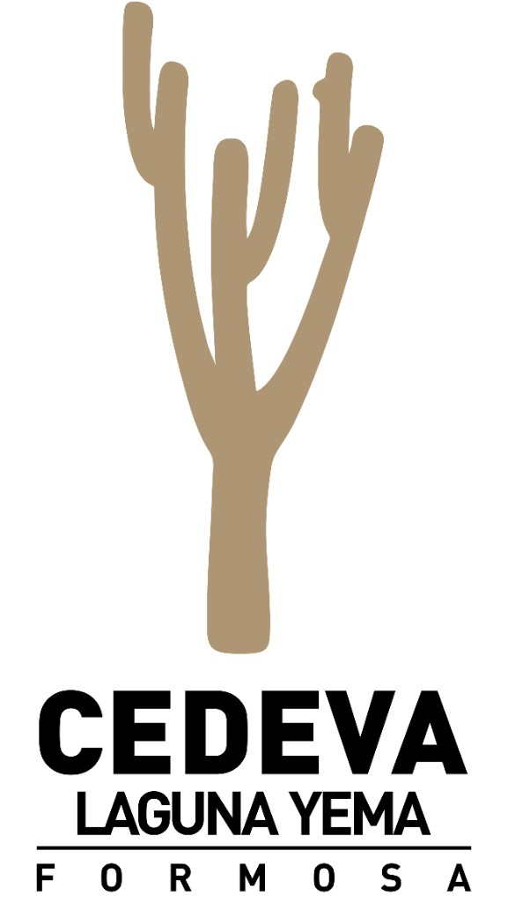
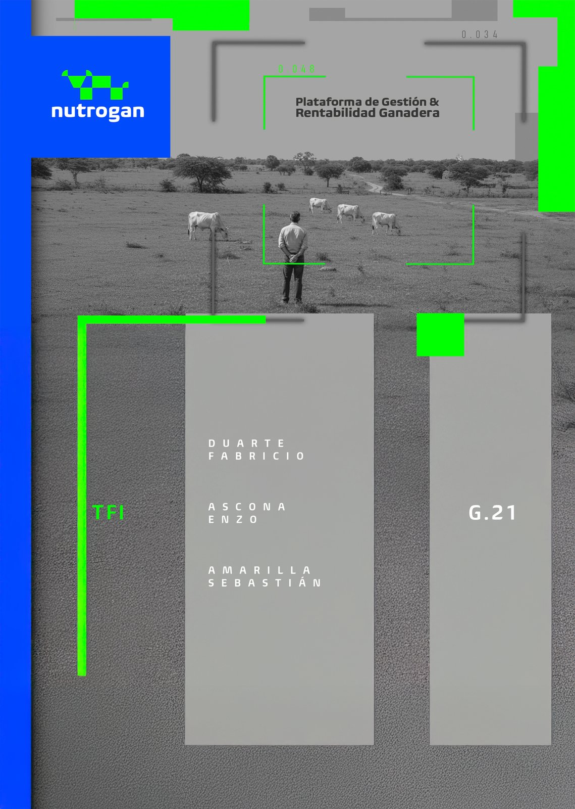
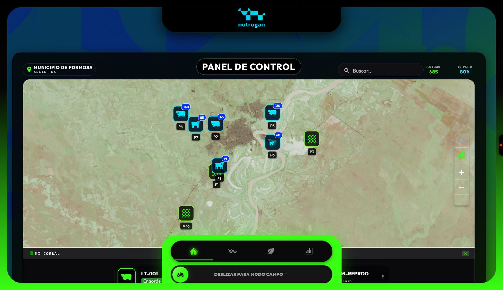
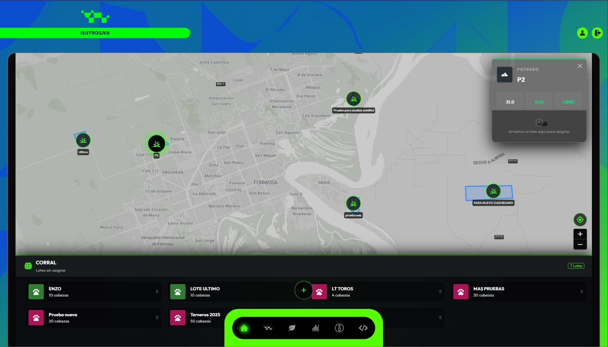
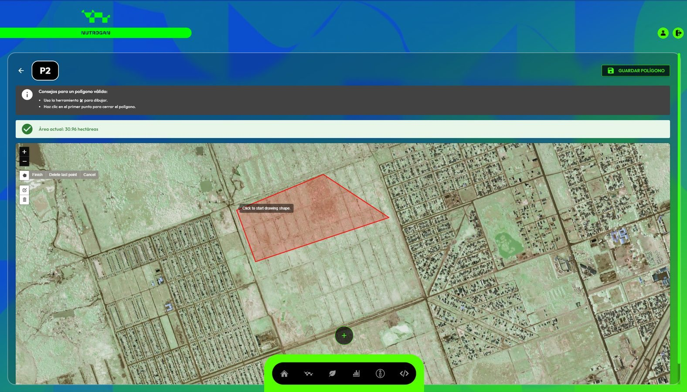
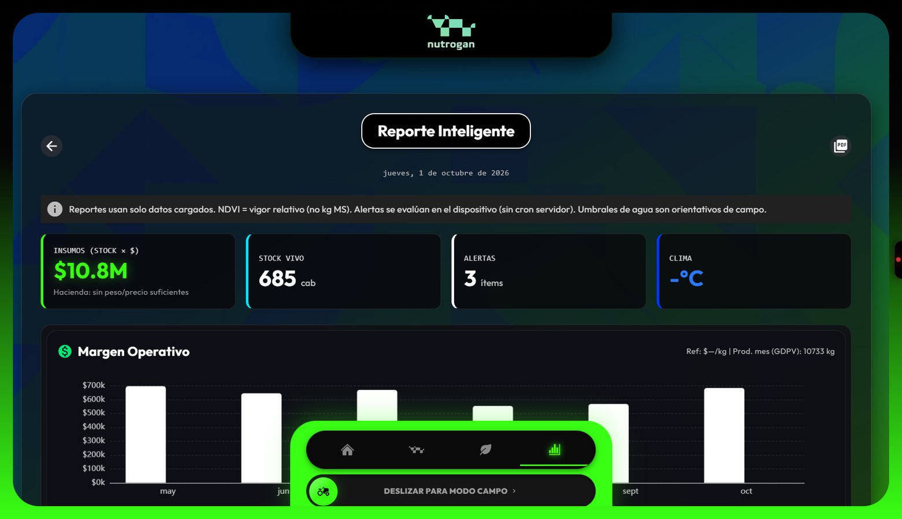
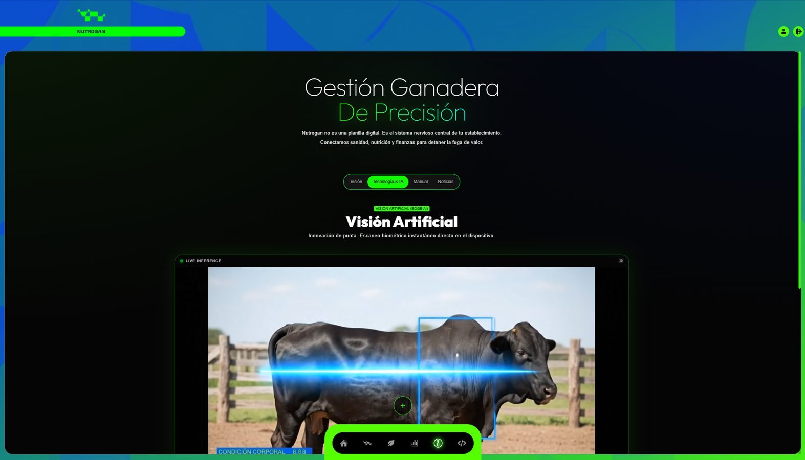

nutrogan
Plataforma integral de gestión y rentabilidad ganadera. Offline-first · GIS · Edge AI · Decisiones en el potrero.

De la problemática al impacto
Contexto
CEDEVA, NEA y gestión a ciegas.
Solución
PWA DSS offline-first y arquitectura.
Producto
Módulos, GIS, reportes y modo campo.
Ingeniería
Scrum, GitFlow, QA, CI/CD e impacto.
Quiénes construimos Nutrogan
Fabricio N. Duarte
Legajo 29.154 · DNI 37.082.207
Arquitectura PWA, UX táctica, GIS e inteligencia en el borde.
Enzo A. Ascona
Legajo 29.134 · DNI 42.635.761
PostgreSQL, RLS, stores Pinia y motor financiero/productivo.
Sebastián E. Amarilla
Legajo 29.132 · DNI 39.318.151
Docker, GitLab CI/CD, testing automatizado y despliegue.
Docentes: Eduardo Roig / Facundo Verón · Tec. Univ. en Programación · UTN FRRE Extensión Formosa
Construido con el territorio
CEDEVA Laguna Yema — Formosa
Centro de Validación de Tecnologías Agropecuarias. Ambientes subtropicales y semiáridos (Las Lomitas / Misión Tacaaglé). Asesoramiento técnico sobre prácticas de campo, pasturas, agua y ganadería de precisión.
Transformar la gestión tradicional en ganadería de precisión.
- Validación institucional en Formosa
- Prueba en establecimiento Santa Úrsula (Tatané)
- Criterios productivos del NEA en el diseño del producto
- Puente universidad ↔ sector agropecuario
¿Por qué nace Nutrogan?
Gestión a ciegas
Decisiones sin GDPV, sin historial confiable y con datos dispersos.
Aislamiento digital
Conectividad nula en el potrero: las apps “solo nube” no llegan al campo.
Informalidad
Papel, memoria y evaluación visual subjetiva de la condición corporal.
DSS + PWA Offline-First
Soberanía operativa: 100% funcional sin internet.
Inteligencia
Edge AI y métricas productivas (GDPV, CC INTA).
Geoespacial
Mapas satelitales, potreros y NDVI de pastura.
Rentabilidad
Márgenes, despensa, valuación de hacienda.
Equipo
Roles, alertas y comunicación operativa.

Panel de control · liveDashboard Split View

Mapa + Mi Corral · drag & dropMapa 60% · Corral 40%
Asignación lote ↔ potrero
Tarjetas Pro flotantes
Deslizar a modo operario
Stack elegido para el campo
Vue 3 + Quasar
PWA instalable, Pinia, UI táctica
IndexedDB
Cola durable + sync optimista
Supabase
Postgres · Auth · Storage · Edges
Docker + CI/CD
GitLab · Vitest · Cypress
Por qué esta arquitectura
- Un codebase → celular del peón y notebook del dueño
- RLS: el dato se protege a sí mismo por establecimiento
- Edge Functions: NDVI, mercado, alertas, IA
- Leaflet + Vue overlays: GIS con drag & drop real
Inteligencia en el borde
TensorFlow.js en el navegador para apoyo a condición corporal. Cálculos de GDPV, alertas operativas y calidad de agua en el cliente — respuesta inmediata en potrero.
PWA ↔ Sync ↔ PostgreSQL + RLS
Diseñado donde no hay 4G
Operario
CC · Agua · Pesos · Movimientos
Cola local
IndexedDB · pendientes visibles
Nube
Supabase sync automático
Soberanía operativa
- Registrar sin esperar al servidor
- UI optimista: feedback al instante
- Reintentos y estado de sincronización claros
- El establecimiento sigue trabajando
Si solo funciona en la oficina, no es software de campo.
Nutrogan nace de esa restricción del NEA — y la convierte en ventaja competitiva.
Todo el establecimiento, en un sistema
Movimientos, objetivos Cría/Recría/Engorde.
Performance y condición 1–9.
Polígonos, ha, asignación DnD.
Vigor forrajero por potrero.
Fuentes y análisis de calidad.
Insumos, costos, stock mínimo.
Registro pluviométrico.
Canales y avisos operativos.
 Gestión de recursos
Gestión de recursos
Dibujo de potrero · GISReportes que sostienen decisiones

Reporte inteligente · liveInsumos valorizados
Cabezas en sistema
Serie histórica por lote
Informe técnico exportable
- Margen operativo mes a mes
- Evolución de peso y salud (CC)
- Predicción de stock de insumos
- Asistente de diagnóstico situacional
Manos enguantadas
Interfaz para el sol, el polvo y el trabajo a caballo.
- Botones XL · alto contraste neón
- Flujos cortos: CC, AGUA, pesos
- “Deslizar para Modo Campo”
- Roles: operario ve lo esencial
- Identidad táctica / Sci-Fi HUD

Tecnología & Edge AI · CCEl dato se protege a sí mismo
Modelo relacional
Lotes, potreros, evaluaciones, movimientos, agua, inventario.
Row Level Security
Aislamiento multi-establecimiento desde la base.
IndexedDB ↔ API
Historicidad y trazabilidad sin perder continuidad offline.
Cómo lo llevamos adelante
Scrum + Jira
Backlog, épicas, story points. Entregas iterativas con foco en valor de campo.
GitFlow
main / develop / feature / hotfix. Conventional Commits. Code review.
QA basado en riesgos
Vitest (negocio) · Cypress (E2E) · pipeline CI/CD de 5 etapas · Docker multi-stage.
De TFI a plataforma en producción
Módulos de recursos
- Logro técnico: PWA robusta con despliegue automatizado
- Impacto: democratizar tecnología para el productor del NEA
- Validación: CEDEVA Las Lomitas · Est. Santa Úrsula (Tatané)
- Futuro: IoT (crotales) y extensión a otras ganaderías
Un TFI que corre en el campo
Elegimos un problema del NEA, nos aliamos con CEDEVA, aplicamos ingeniería seria y dejamos software en producción. Eso es lo que la UTN FRRE Extensión Formosa forma: egresados 2025 capaces de construir plataformas reales.
MUCHAS GRACIAS